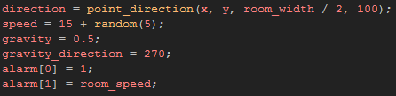
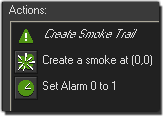
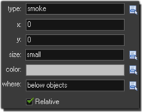
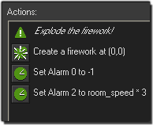
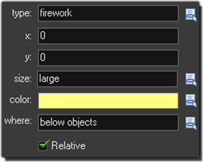

Tutorial
Page 3 of 12
Built In Particles
Now we have our first button, we need to make our first firework effect for the button to create. This effect will be done using the simplest of all methods to generate particles, and that is by using the built in
particle effects that come as standard with GameMaker:Studio.
To start with, create a new object and call it "obj_BuiltIn_Firework", then add the following code into the Create Event:

What we are doing here is creating conditions so that the firework will always start to move towards the center of the room, no matter what part of the x-axis it is created on, and be affected by gravity which will
give it a more "natural" looking curve as it is fired. The code also sets two alarms: the first one, alarm[0], will be used to create a smoke trail, and the second one, alarm[1], will be used to generate
the firework itself. Let's add these events now!
Add an Alarm[0] Event with the following D'n'D:

The effect D'n'D can be found on the Draw Tab and should be set like this:

The effect we want is standard smoke, and the x/y position is at (0,0) since we are setting it relative to the instance with the action (which will be moving itself, so the smoke will be created at the position of the
instance as it moves across the screen). For size we choose "small", as anything larger will be too much for this particular effect, and the color is grey with the effect being set to appear below all other instances and
effects in the room.
After that we reset the alarm so that every step that the instance is moving, we create a smoke particle effect, giving it a nice trail as it shoots across the screen.
Now we need to explode the firework, so we should add an Alarm[1] Event into the object too (we set it in the Create Event, remember?) with the following D'n'D icons:

As you can see, we use the same D'n'D action icon, but this time it should be set as follows:

The alarm actions placed after the effect will set the alarm[0] to -1 (which stops it from running anymore) to prevent anymore smoke being created, and will set a new alarm in the Alarm[2] Event which
we will use to simply destory the instance, since after the firework effect is finished, we don't want an instance that does nothing in the room as that will eventually lag the game as they build up. So add in that
alarm event now, and in it add an Instance Destroy action from the Objects section of the Main1 Tab.
Finally, open up the room editor and add an instance of the button you made in the previous step, then run the game... Click the button to see your first particle effects whizz across the screen! once you are happy
that everything works as it should, save the game and continue onto the next section.
Click on the Next button to go to the next page of the tutorial.